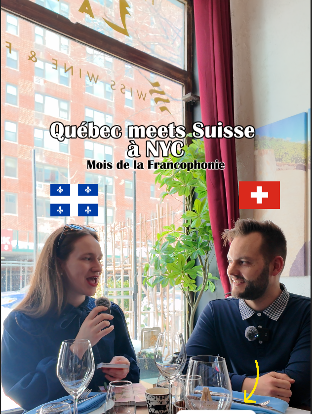

Frenchlo
A French community collaboration with a comedic, authentic tone.
Cultural Storytelling
For the Month of Francophonie in NYC, I created a short-form video series highlighting cultural and linguistic exchanges within the francophone community.

The series made the French language feel accessible, funny, and rooted in real conversations between francophones living in New York.
I created short cultural exchange videos with members of different francophone communities in NYC, focusing on accents, expressions, identity, and the small differences that make each community unique.
What started as a one-month content series quickly became a format I decided to turn into a recurring project.
Performance
Views generated by the Francophonie Month series.
Interactions from community-focused videos.
Engagement rate reached by top-performing content.
The Concept
The format used short interviews and natural conversations to explore how francophone communities experience language and culture in New York City.
Collaborations
A French community collaboration with a comedic, authentic tone.
A Swiss community exchange in a lifestyle and hospitality setting.
A Haitian community conversation on identity, language, and francophone roots.
A French community conversation about accents and everyday cultural differences.
The series strengthened connections between Quebec and other francophone communities.
The project became a repeatable content format for future cultural storytelling.
My Role